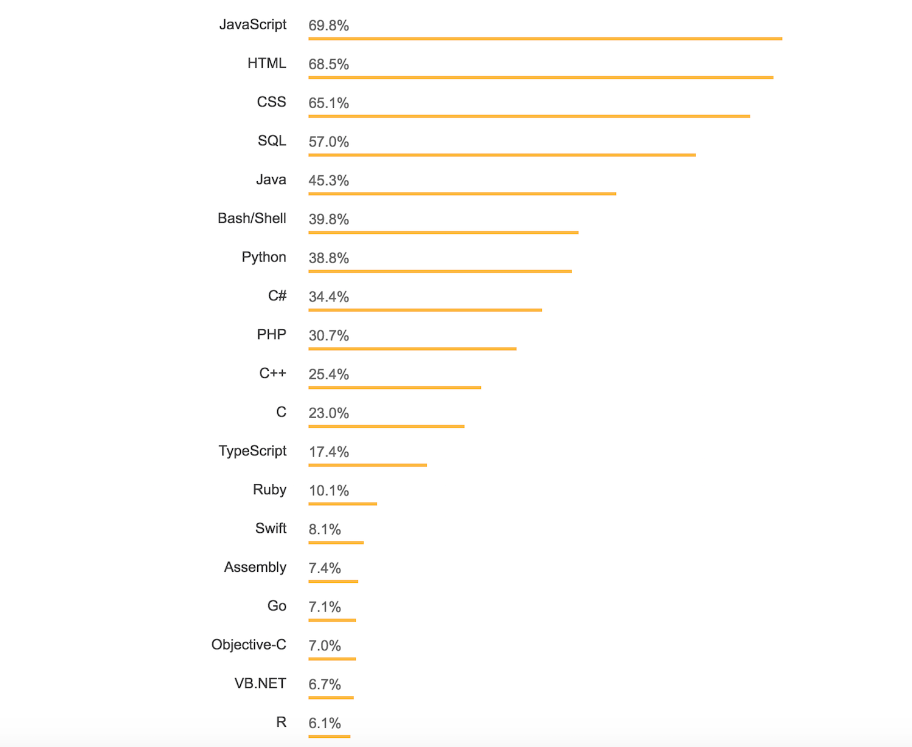

Web Application Development

In the world of web development, those who become experts usually do so by learning from their predecessors. Reading and following the right web development blogs makes it much easier to get a solid education. That’s why in this post, we’ve compiled a list of the top web development blogs that will help you find your footing and acquire essential skills in modern web dev.
Where to Learn Web Development
Whether your new to the world of web development or have been in the industry for years, there’s always new things to learn. New technologies, libraries, and techniques are continuously emerging and if you want to stay on top of all these changes you will need to immerse yourself in communities, groups, and conferences all revolving around web development.
Another great way to stay on top of new information or even get an entry-level understanding of how web development works is to follow well-known blogs in the space. That’s why we’ve compiled an exhaustive list of web development blogs and newsletters to make this process easier.
StackOverflow Developer Survey
Now that you know more about some of the most useful modern web development blogs, you can begin adding a few to your favorites list and checking up on them occasionally to read their latest posts. If you’re a beginner and are not sure which web development technology you should start learning, the following chart is the result of the StackOverflow developer survey displaying the most popular web dev technologies in 2018.
Staying up to date with the latest technologies, tools, and techniques will help you advance as a web developer much more quickly. Let us know in the comments section if you think we missed an important web development blog that should be listed.
A clever person solves a problem. A wise person AVOIDS it.
Categories
Recent Activities
- Created New Fusion file for United States and Canada with the respective Geometry data.
- Created New Fusion file for All countries in the world with its boundary information (Geometry).